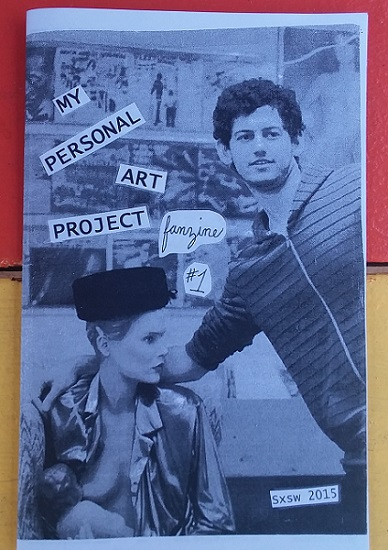

My Personal Art Project #1 (2015) ed. of 100,
"the feminism issue"
interviews with
Lisa Carver (SUCKDOG, ROLLERDERBY)
Michelle Cable (PANACHE BOOKING)
Julia Kugel (THE COATHANGERS)
Daniele Withonel (PRIESTS)
plus a reverse interview with Gus Camaraza